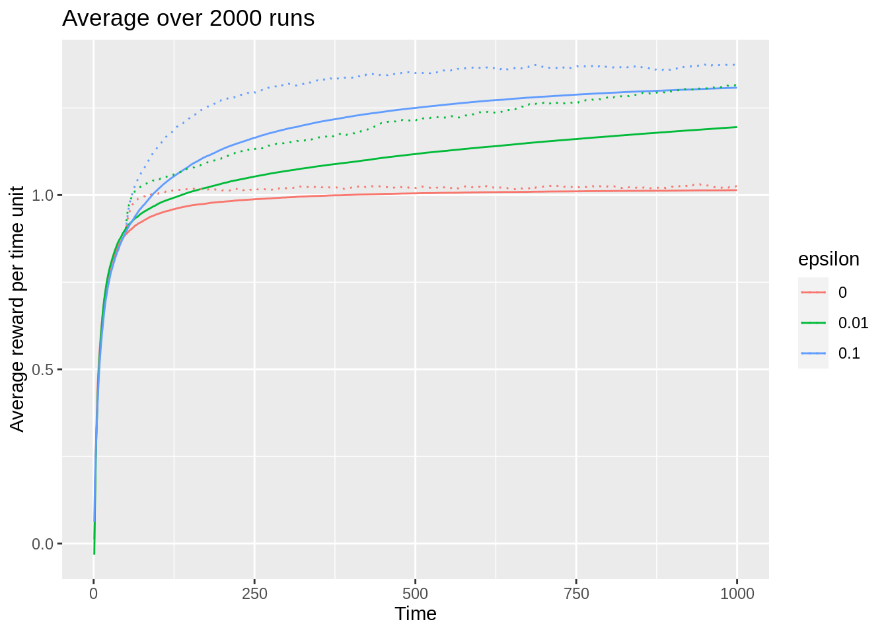

Module 2 Multi-armed bandits
This module consider the k-armed bandit problem which is a sequential decision problem with one state and \(k\) actions. The problem is used to illustrate different learning methods used in RL.
2.2 Textbook readings
For this week, you will need to read Chapter 2 in Sutton and Barto (2018). Read it before continuing this module.
2.3 The k-armed bandit problem
Multi-armed bandits attempt to find the best option among a collection of alternatives by learning through trial and error. The name derives from “one-armed bandit,” a slang term for a slot machine — which is a perfect analogy for how these algorithms work.

Figure 2.1: A 4-armed bandit.
Imagine you are facing a wall with \(k\) slot machines (see Figure 2.1), and each one pays out at a different rate. A natural way to figure out how to make the most money (rewards) would be to try each at random for a while (exploration), and start playing the higher paying ones once you have gained some experience (exploitation). That is, from an agent/environment point of view the agent considers a single state at time \(t\) and have to choose among \(k\) actions given the environment representing the \(k\) bandits. Only the rewards from the \(k\) bandits are unknown, but the agent observe samples of the reward of an action and can use this to estimate the expected reward of that action. The objective is to find an optimal policy that maximize the total expected reward. Note since the process only have a single state, this is the same as finding an optimal policy \(\pi^*(s) = \pi^* = a^*\) that chooses the action with the highest expected reward. Due to uncertainty, there is an exploration vs exploitation dilemma. The agent have one action that seems to be most valuable at a time point, but it is highly likely, at least initially, that there are actions yet to explore that are more valuable.
Multi-armed bandits can be used in e.g. digital advertising. Suppose you are an advertiser seeking to optimize which ads (\(k\) to choose among) to show visitors on a particular website. For each visitor, you can choose one out of a collection of ads, and your goal is to maximize the number of clicks over time.

Figure 2.2: Which ad to choose?
It is reasonable to assume that each of these ads will have different effects, and some will be more engaging than others. That is, each ad has some theoretical — but unknown — click-through-rate (CTR) that is assumed to not change over time. How do we go about solving which ad we should choose (see Figure 2.2)?
2.4 Estimating the value of an action
How can the value of an action be estimated, i.e. the expected reward of an action \(q_*(a) = \mathbb{E}[R_t | A_t = a]\). Assume that at time \(t\) action \(a\) has been chosen \(N_t(a)\) times. Then the estimated action value is \[\begin{equation} Q_t(a) = \frac{R_1+R_2+\cdots+R_{N_t(a)}}{N_t(a)}, \end{equation}\] Storing \(Q_t(a)\) this way is cumbersome since memory and computation requirements grow over time. Instead an incremental solution is better. If we assume that \(N_t(a) = n-1\) and set \(Q_t(a) = Q_n\) then \(Q_{n+1}\) becomes: \[\begin{align} Q_{n+1} &= \frac{1}{n}\sum_{i=1}^{n}R_i \nonumber \\ &= \frac{1}{n}\left( R_{n} + \sum_{i=1}^{n-1} R_i \right) \nonumber \\ &= \frac{1}{n}\left( R_{n} + (n-1)\frac{1}{n-1}\sum_{i=1}^{n-1} R_i \right) \nonumber \\ &= \frac{1}{n}\left( R_{n} + (n-1)Q_n \right) \nonumber \\ &= Q_n + \frac{1}{n} \left[R_n - Q_n\right]. \end{align}\] That os, we can update the estimate of the value of \(a\) using the previous estimate, the observed reward and how many times the action has occurred (\(n\)).
A greedy approach for selecting the next action is \[\begin{equation} A_t =\arg \max_a Q_t(a). \end{equation}\] Here \(\arg\max_a\) means the value of \(a\) for which \(Q_t(a)\) is maximised. A pure greedy approach do not explore other actions. Instead an \(\varepsilon\)-greedy ppproach is used in which with probability \(\varepsilon\) we take a random draw from all of the actions (choosing each action with equal probability) and hereby providing some exploration.
Let us try to implement the algorithm using an R6 agent and environment class. First we define the agent that do actions based on an \(\epsilon\)-greedy strategy, stores the estimated \(Q\) values and the number of times an action has been chosen:
Next, the environment generating rewards. The true mean reward \(q_*(a)\) of an action were selected according to a normal (Gaussian) distribution with mean 0 and variance 1. The observed reward was then generated using a normal distribution with mean \(q_*(a)\) and variance 1:
To test the RL algorithm we use a function returning two plots that compare the performance:
We test the performance using 2000 runs over 1000 time steps.

2.8 Exercises
Below you will find a set of exercises. Always have a look at the exercises before you meet in your study group and try to solve them yourself. Are you stuck, see the help page. Some of the solutions to each exercise can be seen by pressing the button at each question. Beware, you will not learn by giving up too early. Put some effort into finding a solution!